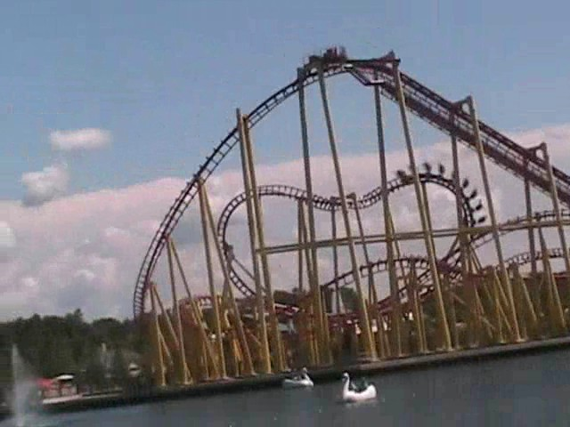
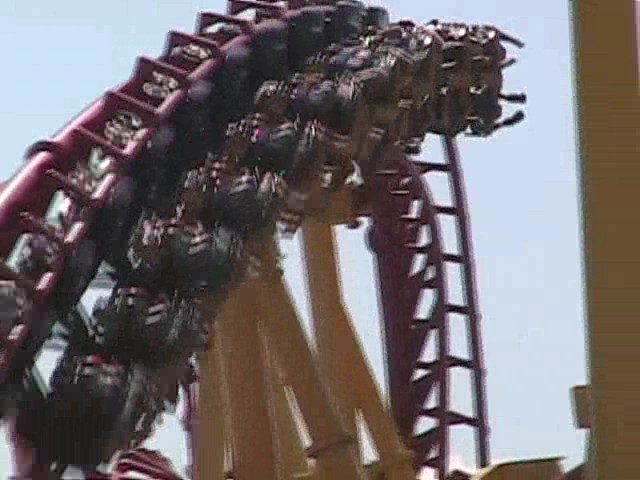
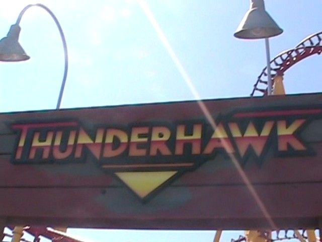
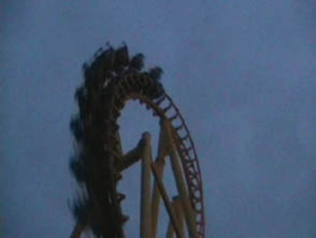
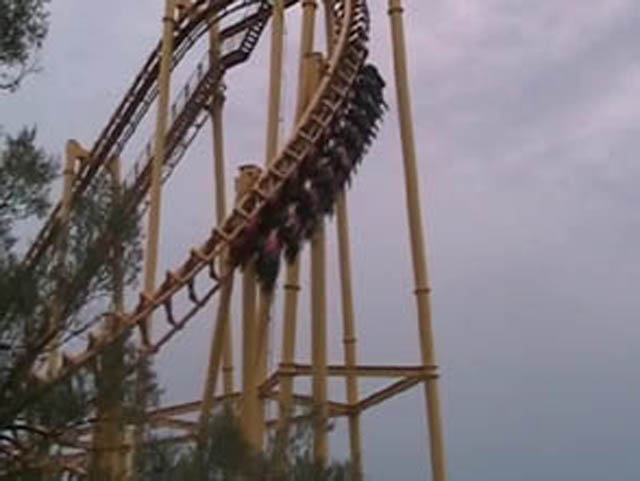

| |
Thunderhawk Review

We're here at Michigan's Adventure to ride your Typical SLC. After climbing in the seat and pulling down the shoulder harness, you dispatch. Up the lift you go. Now originally, I rode this ride at Geauga Lake back in 2007. However, it was dark and I was rushed, so I didn't remember too much about it (Other than the fact that it was REALLY F*CKING UGLY!!!!). Anyways, back to our ride on it at Michigans Adventure. Once you reach the top, it's all downhill from there. You curve and away and down you go! There isn't that much pain in the first drop. Once you reach the bottom of the first drop, it's all fast. Then you soar up in the sea serpent roll. You expect it to hurt after riding other SLCs, but to our suprise, there's no pain! While it's not glass smooth, it's not rough in any way (I think it was like that at Geauga Lake as well). Then after flipping upsidedown a second time, you head back down and head straight for the overbanked turn. That is actually fun and you even get a wee bit of airtime. Then you head for the sidewinder. Once again, the fact that their sidewinder is fun and the whole lack of jolt really makes this SLC a really fun experience. Then you turn around and head straight for two inline twists. The Inline Twists are very fun as they just whip you upsidedown. Then there's not that much. You go through a small hill, around a turn, and down another slight hill, only to glide into the brake run. Of all the SLCs I've been on, Thunderhawk gave me the best ride (And I'm talking about when it was at both Geauga Lake and Michigans Adventure). I would definetly recommend riding this if you are at Michigans Adventure (Besides, aside from Shivering Timbers, what else is there to ride?).
7/10
Location: Michigans Adventure
Opened at Geauga Lake in 1998
Moved to Michigans Adventure in 2008
Built by: Vekoma
Last Ridden: August 9, 2008
I have ridden this exact same ride at the following parks.
Canada's Wonderland
Elitch Gardens
Heide Park
Kentucky Kingdom
La Ronde
Movie Park Germany
Six Flags America
Six Flags Discovory Kingdom
Six Flags New England
Thunderhawk @ Michigans Adventure Photos


Thunderhawk @ Geauga Lake Photos



Home
|